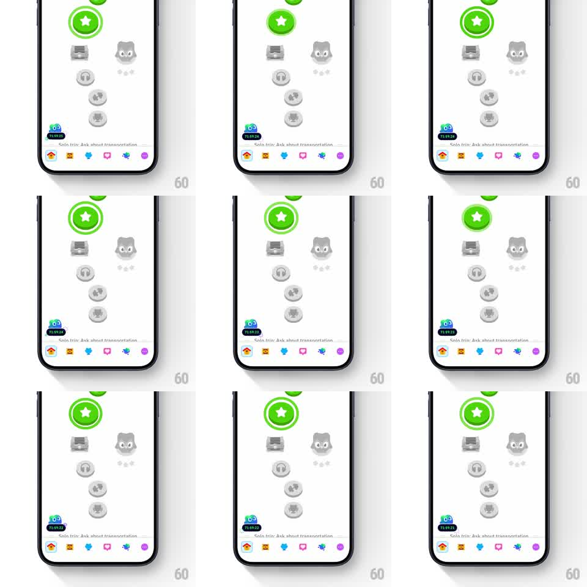

Media
Frame-by-frame

Rebuild this animation 1:1: Duolingo's offer-timer FAB - a small Duo-faced badge with a live countdown sits at the bottom-left of the learning path and pulses on a loop to stay noticed.

Rebuild this animation 1:1: Duolingo's offer-timer FAB - a small Duo-faced badge with a live countdown sits at the bottom-left of the learning path and pulses on a loop to stay noticed.
## Integration
Integration: stack-agnostic spec - springs given as stiffness/damping, timed motions as duration + curve; map every value to your framework and animation library of choice.
## Scene
Duolingo learning path, white: the vertical unit path (green active star node, greyed upcoming nodes, chest/headphone icons) and the tab bar. The FAB: bottom-left, a small dark circle with Duo's face peeking over its top edge and a countdown ("23:59:xx") beneath the face.
## Motion spec
Pattern: ambient looping pulse on a corner promo FAB.
- The countdown ticks every second - digits roll down (120ms slide) with tabular figures so the width never shifts.
- Every 3s the FAB does its attention pop: scale 1 -> 1.12 -> 1 with spring ~450/14 (one quick beat, ~250ms total), and Duo's eyes glance up-right during the pop.
- A soft shadow ring ripples out from the FAB with each pop (scale 1 -> 1.6, opacity 0.3 -> 0, 500ms).
- On tap, the FAB scales 1 -> 0.9 -> 1 (150ms) - the press is separate from the idle pulse.
- The FAB never blocks the path: it stays pinned 16px above the tab bar, 16px from the left edge.
## Calibration
- The pulse is one beat, not a heartbeat double - restraint keeps it ambient.
- Duo only peeks: face from the eyes up over the badge's top edge, body hidden.
## Reduced motion
Static FAB; countdown ticks without rolling (digits swap).
## Don't miss
- The timer must be real - it counts down to the offer's expiry, never resets on screen revisit.
- The ripple ring renders under the FAB, not over the path.